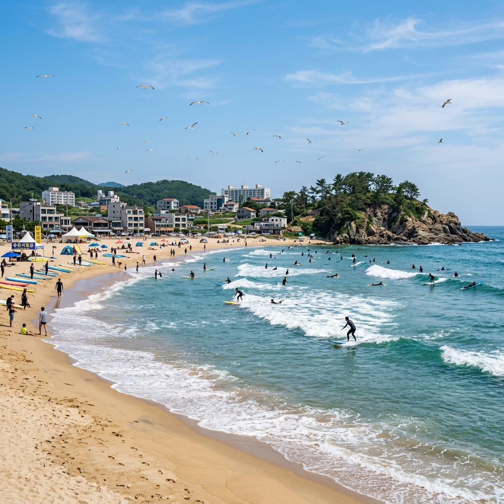
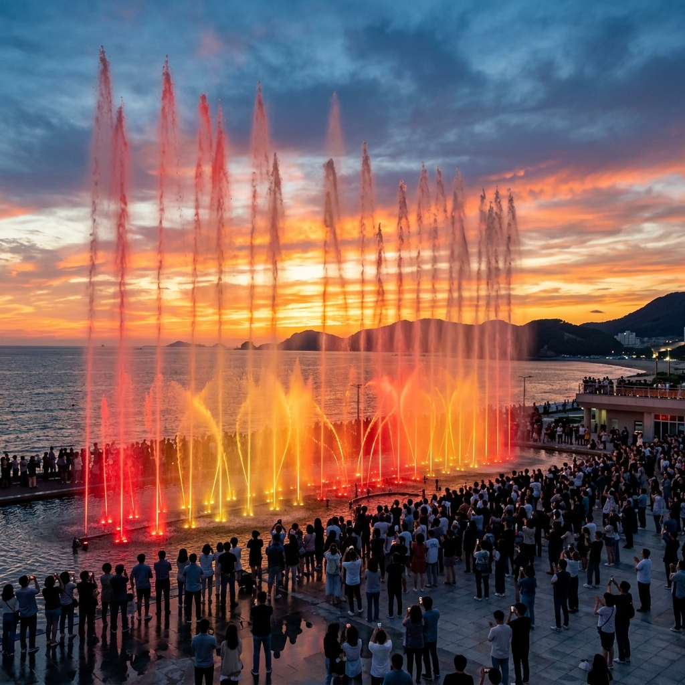
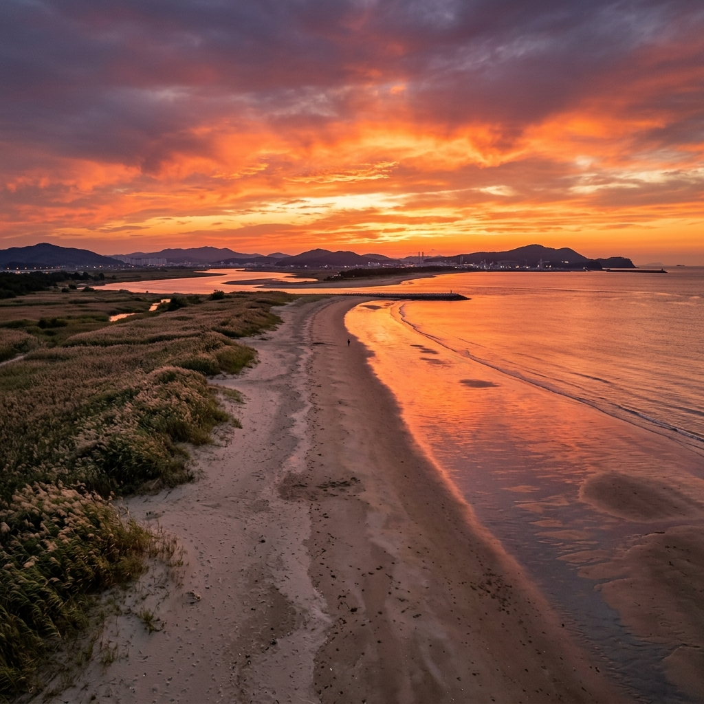

부산 송정해수욕장의 2026년 개장일은 6월 26일(금요일)이며, 폐장은 8월 31일까지입니다. 해운대해수욕장과 같은 날 문을 열어, 부산 동부 해변 중 가장 빠르게 개장하는 곳 중 하나입니다.
오늘이 6월 20일이니 불과 6일 뒤 개장입니다. 지금 바로 계획을 세우시면 개장 첫 주말인 6월 27일(토)~28일(일)에 신선한 여름 바다를 가장 먼저 경험하실 수 있습니다.
송정해수욕장은 해운대에서 북쪽으로 약 5km 거리에 위치한 곳으로, 해운대보다 규모는 작지만 훨씬 한적합니다. 백사장 길이는 약 1.2km이며, 파도가 규칙적으로 들어오는 지형적 특성 덕분에 서핑 명소로 자리 잡았습니다.
안전요원 배치 시간은 오전 9시부터 오후 6시까지이며, 이 시간대에만 공식적인 입욕이 가능합니다. 샤워 시설과 화장실은 해변 내에 무료로 운영됩니다. 주차는 인근 공영주차장을 이용하며, 성수기에도 해운대보다 여유가 있는 편입니다.
송정해수욕장이 특별한 이유는 서핑 친화적 환경입니다. 인근 주민과 부산 서퍼들에게는 이미 오래된 서핑 성지이며, 파도 높이와 방향이 비교적 안정적이어서 초급자부터 중급자까지 즐기기 좋습니다.
송정해수욕장에는 서핑 강습과 보드 대여를 제공하는 업체가 여러 곳 있습니다. 대부분 해변 가까이에 위치하며, 성수기에는 현장 접수도 가능하지만 예약을 권장합니다.
서핑 강습은 보통 2시간 과정으로 진행되며, 강습 비용과 보드·슈트 대여가 포함된 패키지 형태로 운영됩니다. 처음 서핑을 배우는 초급자도 강습만 받으면 어느 정도 파도를 탈 수 있을 만큼 강사진이 체계적으로 운영합니다.
이미 경험이 있다면 보드만 대여해 자유롭게 즐기는 것도 가능합니다. 대여 시간은 1시간 단위로 운영되며, 안전을 위해 개인 보험 가입 여부를 확인해 두시는 것이 좋습니다.
송정해수욕장의 파도는 계절과 날씨에 따라 달라집니다. 여름 장마 직후나 태풍 영향권에 들 때는 파도가 커서 서핑하기 좋지만, 반대로 초급자에게는 위험할 수 있습니다. 서핑 전 현지 숍에 파도 상태를 문의하시거나 기상청 파고 예보를 확인하세요.
서핑 외에도 스탠드업패들보드(SUP)와 카약 등 해양 스포츠 체험도 가능합니다. 해변가 업체에서 다양한 프로그램을 운영하고 있으니, 방문 전 미리 인터넷으로 비교해 보시길 권합니다.
다대포해수욕장은 2026년 7월 1일(수요일) 개장하며, 폐장은 8월 31일까지입니다. 부산 사하구에 위치한 다대포는 도심에서 벗어난 서쪽 끝자락에 자리해 있어, 해운대나 광안리에 비해 조용하고 여유로운 분위기가 특징입니다.
다대포해수욕장의 백사장은 길이 약 1.7km, 폭 최대 200m로 부산 해수욕장 중 가장 넓은 백사장을 자랑합니다. 넓은 면적 덕분에 성수기에도 혼잡하지 않게 느껴지며, 모래도 고운 편입니다.
낙조가 일품입니다. 서쪽을 바라보는 지형 특성상 여름 저녁에 붉게 물드는 낙조 풍경이 아름답기로 소문나 있습니다. 다대포 해변에서 바라보는 석양은 부산에서도 손꼽히는 뷰입니다.
교통은 부산 지하철 1호선 다대포해수욕장역에서 도보 10분 거리입니다. 부산 내에서 지하철로 접근할 수 있는 몇 안 되는 해수욕장 중 하나여서 자가용 없이도 편리하게 방문할 수 있습니다.

다대포 해변 공원에는 꿈의낙조분수가 설치되어 있습니다. 지름 60m, 최대 분사 높이 55m로, 기네스북에 세계 최대 규모 바닥 분수로 등재된 명물입니다.
분수 공연은 하절기(4월~10월)에 운영되며, 운영 시간은 요일과 계절에 따라 조금씩 다릅니다. 일반적으로 평일에는 오후 6시~9시 사이에 2회, 주말에는 오후 5시~9시 사이에 3~4회 공연합니다. 공연 한 회는 약 15~20분 진행되며, 음악에 맞춰 물줄기가 춤을 추는 음악 분수 형식입니다.
해질 무렵인 저녁 7시~8시 사이 공연이 가장 인기입니다. 낙조의 붉은 빛과 분수의 물보라가 어우러지는 장면은 정말 환상적입니다. 야경을 목표로 한다면 오후 8시 이후 분수에 조명이 점등될 때를 노려보세요.
분수 관람은 무료이며, 공연 시간에 맞춰 원형 분수대 주변에 자리를 잡으면 됩니다. 성수기 주말에는 공연 30분 전부터 자리 경쟁이 시작되니 일찍 도착하시는 것이 좋습니다. 분수 바닥에 직접 들어갈 수 있는 시간대가 별도로 있어 아이들이 특히 좋아합니다.
분수 공연 외에도 다대포 해변 공원에는 꽃 정원과 갈대 군락지, 생태 공원이 조성되어 있어 산책하기에도 좋습니다. 낙동강 하구와 가까워 다양한 철새도 관찰할 수 있습니다.
송정해수욕장의 경우, 주변에 공영주차장이 여러 개 있으며 성수기에도 해운대보다 주차 사정이 수월한 편입니다. 해운대역에서 버스로도 이동할 수 있어 대중교통 접근성도 좋습니다. 송정역(동해선)에서 도보 15분 거리입니다.
다대포해수욕장은 부산 지하철 1호선 다대포해수욕장역에서 도보 약 10분 거리입니다. 도심에서 지하철을 타고 종점에 가까운 역까지 한 번에 이동할 수 있어 편리합니다. 자가용이라면 다대포해변공원 주차장을 이용하면 되며, 평일에는 여유롭게 주차할 수 있습니다.
하루에 두 해변을 모두 방문하는 코스도 가능합니다. 오전에 송정에서 서핑을 즐기고 오후에 이동해 다대포에서 낙조와 분수를 감상하는 일정입니다. 두 곳의 거리는 차로 약 40분~1시간이며, 부산 시내를 관통하거나 해안 도로를 이용하면 됩니다.
부산 도착 시 KTX 부산역을 이용한다면 부산역에서 지하철 1호선을 타고 다대포해수욕장역까지 약 50분이 소요됩니다. 송정은 부산역에서 동해선 전철(지하철 2호선 환승)로 약 45분 이내에 도착할 수 있습니다.
해운대해수욕장은 부산 여름의 상징이지만, 성수기에는 인파로 인해 오히려 바다를 즐기기 어려운 역설적인 상황이 벌어집니다. 주차는 수시간 대기가 기본이고, 백사장 역시 파라솔로 빽빽하게 들어차는 경우가 많습니다.
반면 송정해수욕장은 같은 날 개장하면서도 규모가 작아 상대적으로 조용합니다. 서핑을 즐기려는 젊은 여행자들에게 이미 유명하지만, 단순 해수욕을 즐기는 인파 비율은 해운대보다 훨씬 낮습니다. 해변 뒤편으로 일본식 골목 분위기의 작은 카페와 식당이 자리해 있어 식사와 휴식을 겸하기에도 좋습니다.
다대포 역시 마찬가지입니다. '부산 사람들만 아는 해변'이라고 불릴 만큼 타 지역 여행자에게는 덜 알려진 곳이지만, 넓은 백사장과 아름다운 낙조, 꿈의낙조분수라는 독보적인 콘텐츠를 갖추고 있습니다.
혼잡을 피해 여유로운 여름 바다를 즐기고 싶다면, 유명세보다 실제 경험에 집중해 보세요. 송정과 다대포가 그 답이 될 수 있습니다.

송정해수욕장 인근에는 신선한 해산물을 즐길 수 있는 작은 항구 식당들이 많습니다. 송정항에서 구입한 싱싱한 재료로 만든 물회나 조개구이가 대표적입니다. 해변 카페와 브런치 식당도 골목 곳곳에 들어서 있어 가볍게 한 끼를 해결하기 좋습니다.
다대포 쪽에서는 해변 공원 주변의 포장마차촌이 저녁 시간에 활기를 띱니다. 다대포는 낙동강과 바다가 만나는 지점이라 민물과 바닷물이 섞이는 기수구역 특성상 은어·숭어 같은 어종이 잡히며, 지역 주민들이 즐겨 찾는 특색 있는 음식을 접할 수 있습니다.
부산의 빼놓을 수 없는 먹거리인 돼지국밥과 어묵(오뎅)도 부산 어디서든 접할 수 있습니다. 해수욕 후 뜨끈한 돼지국밥 한 그릇이 생각보다 잘 어울리며, 특히 저녁 기온이 내려가는 시간대에 더욱 맛있게 느껴집니다.
밀면도 부산 특유의 음식입니다. 평양냉면과 비슷하지만 부산만의 독특한 양념으로 만든 밀면은 여름 해수욕 후 더위를 식히는 데 최적화된 음식입니다. 시원하고 담백한 육수에 쫄깃한 면발이 잘 어우러집니다.
부산 해수욕장은 7월 하순부터 8월 중순이 가장 혼잡합니다. 반면 개장 직후인 6월 말~7월 초는 아직 휴가철 성수기에 진입하기 전이라 상대적으로 한산합니다.
송정해수욕장이 6월 26일 개장하므로, 6월 26~28일 주말에 방문한다면 성수기보다 훨씬 여유로운 환경에서 부산 여름 바다를 즐길 수 있습니다. 숙박비도 성수기보다 저렴한 경우가 많으며, 인기 식당도 대기 없이 입장할 가능성이 높습니다.
부산 여름 여행의 또 다른 팁은 아침과 저녁 시간을 적극 활용하는 것입니다. 정오~오후 3시의 뙤약볕 시간대는 그늘에서 쉬고, 아침 일찍 해수욕을 즐긴 뒤 오후에는 관광지나 시장 탐방, 저녁에는 다대포 분수 관람으로 알차게 채우시면 됩니다.
숙박은 해운대·남포동·서면 등 부산 주요 지점 중 하나를 거점으로 삼고 당일치기로 송정이나 다대포를 방문하는 방식이 가장 효율적입니다.
부산 해수욕장 방문 시 준비물을 꼭 체크하세요. 래쉬가드는 필수입니다. 자외선이 강한 여름 바다에서 피부를 보호하면서 서핑이나 해양 스포츠를 즐길 수 있습니다. 아쿠아슈즈도 챙기면 해변 이동이 편리합니다.
자외선 차단제는 방수 기능이 있는 제품으로 SPF 50+ 이상을 준비하세요. 바다에 들어갔다 나오면 바로 다시 발라야 할 만큼 자주 사용합니다. 여유분을 충분히 챙기시는 것이 좋습니다.
다대포 분수 관람 시에는 저녁 기온이 내려갈 수 있으니 가볍게 걸칠 긴소매 옷을 하나 준비하세요. 분수 바닥을 직접 체험할 경우 미끄럼 방지 기능이 있는 슬리퍼나 아쿠아슈즈가 유용합니다.
카메라나 스마트폰을 바닷가에서 사용할 경우 방수 케이스 또는 방수백을 사용하시길 권합니다. 갑작스러운 파도나 분수 물에 기기가 손상되는 사고를 예방할 수 있습니다.
부산의 대중교통인 지하철과 버스는 통합 교통카드로 이용 가능합니다. 교통카드를 준비해 두면 이동할 때마다 현금을 찾지 않아도 되어 편리합니다.